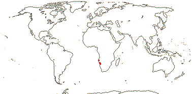

EMBRYOPSIDA Pirani & Prado
Gametophyte dominant, independent, multicellular, not motile, initially ±globular; showing gravitropism; acquisition of phenylalanine lysase [PAL], microbial terpene synthase-like genes +, triterpenoids produced by CYP716 enzymes, phenylpropanoid metabolism [lignans +, flavonoids + (absorbtion of UV radiation)], xyloglucans in primary cell wall, side chains charged; plant poikilohydrous [protoplasm dessication tolerant], ectohydrous [free water outside plant physiologically important]; thalloid, leafy, with single-celled apical meristem, tissues little differentiated, rhizoids +, unicellular; chloroplasts several per cell, pyrenoids 0; glycolate metabolism in leaf peroxisomes [glyoxysomes]; centrioles/centrosomes in vegetative cells 0, microtubules with γ-tubulin along their lengths [?here], interphase microtubules form hoop-like system; metaphase spindle anastral, predictive preprophase band + [with microtubules and F-actin; where new cell wall will form], phragmoplast + [cell wall deposition centrifugal, from around the anaphase spindle], plasmodesmata +; antheridia and archegonia jacketed, surficial; blepharoplast +, centrioles develop de novo, bicentriole pair coaxial, separate at midpoint, centrioles rotate, associated with basal bodies of cilia, multilayered structure + [4 layers: L1, L4, tubules; L2, L3, short vertical lamellae] (0), spline + [tubules from L1 encircling spermatid], basal body 200-250 nm long, associated with amorphous electron-dense material, microtubules in basal end lacking symmetry, stellate array of filaments in transition zone extended, axonemal cap 0 [microtubules disorganized at apex of cilium]; male gametes [spermatozoids] with a left-handed coil, cilia 2, lateral; oogamy; sporophyte multicellular, cuticle +, plane of first cell division transverse [with respect to long axis of archegonium/embryo sac], sporangium and upper part of seta developing from epibasal cell [towards the archegonial neck, exoscopic], with at least transient apical cell [?level], initially surrounded by and dependent on gametophyte, placental transfer cells +, in both sporophyte and gametophyte, wall ingrowths develop early; suspensor/foot +, cells at foot tip somewhat haustorial; sporangium +, single, terminal, dehiscence longitudinal; meiosis sporic, monoplastidic, MTOC [MTOC = microtubule organizing centre] associated with plastid, sporocytes 4-lobed, cytokinesis simultaneous, preceding nuclear division, quadripolar microtubule system +; wall development both centripetal and centrifugal, 1000 spores/sporangium, sporopollenin in the spore wall laid down in association with trilamellar layers [white-line centred lamellae; tripartite lamellae]; nuclear genome size [1C] <1.4 pg, main telomere sequence motif TTTAGGG, LEAFY and KNOX1 and KNOX2 genes present, ethylene involved in cell elongation; chloroplast genome with close association between trnLUAA and trnFGAA genes [precursors for starch synthesis], tufA gene moved to nucleus; mitochondrial trnS(gcu) and trnN(guu) genes +.
Many of the bolded characters in the characterization above are apomorphies of subsets of streptophytes along the lineage leading to the embryophytes, not apomorphies of crown-group embryophytes per se.
All groups below are crown groups, nearly all are extant. Characters mentioned are those of the immediate common ancestor of the group, [] contains explanatory material, () features common in clade, exact status unclear.
STOMATOPHYTES
Abscisic acid, L- and D-methionine distinguished metabolically; pro- and metaphase spindles acentric; sporophyte with polar transport of auxins, class 1 KNOX genes expressed in sporangium alone; sporangium wall 4≤ cells across [≡ eusporangium], tapetum +, secreting sporopollenin, which obscures outer white-line centred lamellae, columella +, developing from endothecial cells; stomata +, on sporangium, anomocytic, cell lineage that produces them with symmetric divisions [perigenous]; underlying similarities in the development of conducting tissue and of rhizoids/root hairs; spores trilete; shoot meristem patterning gene families expressed; MIKC, MI*K*C* genes, post-transcriptional editing of chloroplast genes; gain of three group II mitochondrial introns, mitochondrial trnS(gcu) and trnN(guu) genes 0.
[Anthocerophyta + Polysporangiophyta]: gametophyte leafless; archegonia embedded/sunken [only neck protruding]; sporophyte long-lived, chlorophyllous; cell walls with xylans.
POLYSPORANGIOPHYTA†
Sporophyte well developed, branched, branching apical, dichotomous, potentially indeterminate; hydroids +; stomata on stem; sporangia several, terminal; spore walls not multilamellate [?here].
TRACHEOPHYTA†
Vascular tissue + [tracheids, walls with bars of secondary thickening].
EXTANT TRACHEOPHYTA / VASCULAR PLANTS
Sporophyte with photosynthetic red light response, stomata open in response to blue light; plant homoiohydrous [water content of protoplasm relatively stable]; control of leaf hydration passive; plant endohydrous [physiologically important free water inside plant]; (condensed or nonhydrolyzable tannins/proanthocyanidins +); xyloglucans with side chains uncharged [?level], in secondary walls of vascular and mechanical tissue; lignins +; stem apex multicellular, with cytohistochemical zonation, plasmodesmata formation based on cell lineage; tracheids +, in both protoxylem and metaxylem, G- and S-types; sieve cells + [nucleus degenerating]; endodermis +; leaves/sporophylls spirally arranged, blades with mean venation density ca 1.8 mm/mm2 [to 5 mm/mm2], all epidermal cells with chloroplasts; sporangia adaxial, columella 0; tapetum glandular; ?position of transfer cells; MTOCs not associated with plastids, basal body 350-550 nm long, stellate array in transition region initially joining microtubule triplets; suspensor +, shoot apex developing away from micropyle/archegonial neck [from hypobasal cell, endoscopic], root lateral with respect to the longitudinal axis of the embryo [plant homorhizic].
[MONILOPHYTA + LIGNOPHYTA]Sporophyte endomycorrhizal [with Glomeromycota]; growth ± monopodial, branching spiral; roots +, endogenous, positively geotropic, root hairs and root cap +, protoxylem exarch, lateral roots +, endogenous; G-type tracheids +, with scalariform-bordered pits; leaves with apical/marginal growth, venation development basipetal, growth determinate; sporangium dehiscence by a single longitudinal slit; cells polyplastidic, MTOCs diffuse, perinuclear, migratory; blepharoplasts +, paired, with electron-dense material, centrioles on periphery, male gametes multiciliate; chloroplast long single copy ca 30kb inversion [from psbM to ycf2]; mitochondrion with loss of 4 genes, absence of numerous group II introns; LITTLE ZIPPER proteins.
LIGNOPHYTA†
Sporophyte woody; stem branching lateral, meristems axillary; lateral root origin from the pericycle; cork cambium + [producing cork abaxially], vascular cambium bifacial [producing phloem abaxially and xylem adaxially].
SEED PLANTS†
Plants heterosporous; megasporangium surrounded by cupule [i.e. = unitegmic ovule, cupule = integument]; pollen lands on ovule; megaspore germination endosporic [female gametophyte initially retained on the plant].
EXTANT SEED PLANTS / SPERMATOPHYTA
Plant evergreen; nicotinic acid metabolised to trigonelline, (cyanogenesis via tyrosine pathway); microbial terpene synthase-like genes 0; primary cell walls rich in xyloglucans and/or glucomannans, 25-30% pectin [Type I walls]; lignin chains started by monolignol dimerization [resinols common], particularly with guaiacyl and p-hydroxyphenyl [G + H] units [sinapyl units uncommon, no Maüle reaction]; root stele diarch to pentarch, xylem and phloem originating on alternating radii, cork cambium deep seated; stem apical meristem complex [with quiescent centre, etc.], plasmodesma density in SAM 1.6-6.2[mean]/μm2 [interface-specific plasmodesmatal network]; eustele +, protoxylem endarch, endodermis 0; wood homoxylous, tracheids and rays alone, tracheid/tracheid pits circular, bordered; mature sieve tube/cell lacking functioning nucleus, sieve tube plastids with starch grains; phloem fibres +; cork cambium superficial; leaf nodes 1:1, a single trace leaving the vascular sympodium; leaf vascular bundles amphicribral; guard cells the only epidermal cells with chloroplasts, stomatal pore with active opening in response to leaf hydration, control by abscisic acid, metabolic regulation of water use efficiency, etc.; axillary buds +, exogenous; prophylls two, lateral; leaves with petiole and lamina, development basipetal, lamina simple; sporangia borne on sporophylls; spores not dormant; microsporophylls aggregated in indeterminate cones/strobili; grains monosulcate, aperture in ana- position [distal], primexine + [involved in exine pattern formation with deposition of sporopollenin from tapetum there], exine and intine homogeneous, exine alveolar/honeycomb; ovules with parietal tissue [= crassinucellate], megaspore tetrad linear, functional megaspore single, chalazal, sporopollenin 0; gametophyte ± wholly dependent on sporophyte, development initially endosporic [apical cell 0, rhizoids 0, etc.]; male gametophyte with tube developing from distal end of grain, male gametes two, developing after pollination, with cell walls; female gametophyte initially syncytial, walls then surrounding individual nuclei; embryo cellular ab initio, suspensor short-minute, embryonic axis straight [shoot and root at opposite ends; plant allorhizic], cotyledons 2; embryo ± dormant; chloroplast ycf2 gene in inverted repeat, trans splicing of five mitochondrial group II introns, rpl6 gene absent; whole nuclear genome duplication [ζ - zeta - duplication], two copies of LEAFY gene, PHY gene duplications [three - [BP [A/N + C/O]] - copies], 5.8S and 5S rDNA in separate clusters.
EXTANT GYMNOSPERMS / PINOPHYTA / ACROGYMNOSPERMAE
Biflavonoids +; cuticle wax tubules with nonacosan-10-ol; ferulic acid ester-linked to primary unlignified cell walls, silica usu. low; root protophloem not producing sieve tubes, with secretory cells, sieve area of sieve tube with small pores generally less than 0.8 µm across that have cytoplasm and E.R., joining to form a median cavity in the region of the middle lamella, Strasburger/albuminous cells associated with sieve tubes [the two not derived from the same immediate mother cell], phloem fibres +; sclereids +, ± tracheidal transfusion tissue +; stomatal poles raised above pore, no outer stomatal ledges or vestibule, epidermis lignified; buds perulate/with cataphylls; lamina development marginal; plants dioecious; microsporangia abaxial, dehiscing by the action of the epidermis [= exothecium]; pollen tectate, endexine lamellate at maturity, esp. intine with callose; ovules aggregated into strobili, erect, pollen chamber formed by breakdown of nucellar cells, nucellus massive; ovules increasing considerably in size between pollination and fertilization, but aborting unless pollination occurs; ovule with pollination droplet; pollen grain germinates on ovule, usu. takes two or more days, tube with wall of pectose + cellulose microfibrils, branched, growing at up to 10(-20) µm/hour, haustorial, breaks down sporophytic cells; male gametophyte of two prothallial cells, a tube cell, and an antheridial cell, the latter producing a sterile cell and 2 gametes; male gametes released by breakdown of pollen grain wall, with >1000 cilia, basal body 800-900 nm long; fertilization 7 days to 12 months or more after pollination, to ca 2 mm from receptive surface to egg; female gametophyte initially with central vacuole and peripheral nuclei plus cytoplasm, cellularization/alveolarization by centripetal formation of anticlinal walls, the inner periclinal face open, with nuclei connected to adjacent nuclei by spindle fibres; seeds "large" [ca 8 mm3], but not much bigger than ovule, with morphological dormancy; testa mainly of coloured sarcoexotesta, scleromesotesta, and ± degenerating endotesta; first zygotic nuclear division with chromosomes of male and female gametes lining up on separate but parallel spindles, embryogenesis initially nuclear, embryo ± chlorophyllous; gametophyte persists in seed; plastid and mitochondrial transmission paternal; genome size [1C] 10< pg [1 pg = 109 base pairs]; two copies of LEAFY gene [LEAFY, NEEDLY] and three of the PHY gene, [PHYP [PHYN + PHYO]], chloroplast inverted repeat with duplicated ribosomal RNA operons, second intron in the mitochondrial rps3 gene [group II, rps3i2].
[GNETALES + PINALES]: tree branched; wood pycnoxylic; tracheid side wall pits with torus:margo construction, bordered; phloem fibres 0; axillary buds at at least some of the nodes; microsporangiophore/filament simple with terminal microsporangia; microsporangia abaxial, dehiscing by the action of the hypodermis [endothecium]; (seedlings green in the dark); plastid ndh genes lost/pseudogenized.
PINALES Gorozh.
Resin ducts/cells in phloem in vascular tissue [and elsewhere]; lignins lacking syringaldehyde [Mäule reaction negative]; cork cambium ± deep seated; bordered pits on tracheids round, opposite; compression wood +; nodes 1:1; leaves with single vein; plants monoecious; pollen exine thick [³2 µm thick]; ovulate strobilus compound, ovuliferous scales flattened, ± united with bract scales; ovules lacking pollen chamber; pollen tube unbranched, growing towards the ovule, wall with arabinogalactan proteins, gametes non-motile, lacking walls, released from the distal end of the tube, siphonogamy; seed coat dry, not vascularized; proembryo with 2 to 4 nuclear divisions, with upper tier or tiers of cells from which secondary suspensor develops, elongated primary suspensor cells and basal embryonal cells [or some variant]; germination phanerocotylar, epigeal, (seedlings green in the dark); plastid and mitochondrial transmission paternal, one duplication in the PHYP gene line, one copy of chloroplast inverted repeat missing. - 7 families, 68 genera, 545 species.
Age. Davies et al. (2011) suggested an age for this clade of (259-)219(-174) m.y.; Magallón et al. (2013) suggested that it was about 312 m.y.o., while (259-)219(-174) m.y. is the age suggested by Clarke et al. (2011); the age of a [Gnetales + Pinales] clade is estimated at 181-140.1 m.y. (Naumann et al. 2013).
Lignin with syringyl units common [G + S lignin, positive Maüle reaction]; stem apex with tunica/corpus construction; roots diarch, no secretory cells in the centre; bark with sclereids; gelatinous fibres [g-fibres] with innermost layer of secondary cell wall rich in cellulose and poor in lignin; protoxylem tracheids with large circular bordered pits, vessels + [from circular bordered pits], also in metaxylem, both fibre tracheids and tracheids +; phloem fibres 0; nodes 1:2, vascular traces leaving stele one internode below exit; two primary veins in leaves (and cone bracts); resin canals 0, mucilage cells +; stomata paracytic [mesogenous]; leaves opposite, joined at the base, overall growth ± diffuse/marginal/from basal plate, axillary buds serial, collateral; strobili compound; megasporangia apical, bracts opposite; microsporangiate strobili associated with sterile ovules; microsporangiate cones of two fused microsporophylls, microsporangia in synangia, surrounded by a tubular "bract", dehiscence apical; pollen not saccate, very strongly oblate, inaperturate, transversly ridged [transverse to the long axis: plicate; pseudosulcate], tectate; ovulate cone scale 0, ovules terminal, surrounded by a vascularized connate structure ["outer integument"/seed envelope], papillae on the inner surface around the micropyle; integument with much-elongated beak, ca 2 cell layers across, not vascularized, micropylar tube with inner epidermis lignified, nucellar cap well developede; ovules with pollination droplets, pollen reaches nucellus in less than 7 days, both sperm nuclei fuse with gametophytic cells ["double fertilization"]; first zygotic nuclear division with one spindle, tiered proembryo 0, free nuclear stage in which each nucleus forms an embryo, secondary suspensor developing from upper embryonal tier, no primary suspensor; germination epigeal, (seedlings green in the dark), cotyledons with connate bases; nuclear genome C value 1.4-3.5 pg, chloroplast transmission maternal, ndh genes and rps16 gene lost, loss of PHY0 gene, mitochondrial coxII.i3 intron 0. - 3 families, 3 genera, 93 species.
Age. Estimates of the age of crown-group Gnetales are (202-)155(-104) m.y. with eudicot calibration (Smith et al. 2010: see also Table S3), slightly older without. Magallón et al. (2013) suggested an age of 140-120 m.y., Won and Renner (2006) ages of (196-)159(-132) m.y., Ickert-Bond et al. (2010: 95% h.p.d.) ages of (192.3-)166.6(-90.6) m.y. and Laenen et al. (2014) an age of around 261.8 m. years.
Ephedra and Welwitschia had diverged by 110 m.y. ago or more, the welwitschioid seedling, Cratonia, from Brazil, being of this vintage (Rydin et al. 2003), while pollen and seeds attributed to a welwitschioid plant are known from the Lower Cretaceous both in Portugal and eastern North America (Friis et al. 2014). For a probable Gnetalean fossil from the Permian, some 250-270 m.y.a., see Wang (2004). Both Ephedra and Welwitschia have distinctive ridged pollen that has a fossil record of ³250 m.y., being common from the Late Triassic onwards. Dilcher et al. (2005) noted that Gnetalean-like (striate/ribbed) pollen was common in both N. and S. Hemispheres; in the former, records are from the Upper Triassic onwards, in the latter, especially in the early Cretaceous from the northern half of South America. The pollen found by Wang (2004) associated with his fossil, Palaeognetaleana auspicia, is of this general kind. However, that fossil was radiospermic and had two complete integuments, a possible third integument being represented by scales, and the arrangement of parts in the cone was spiral, so what it represents is unclear. Crane (1996) summarized the fossil history of Gnetales (see Won & Renner 2006; Rydin & Friis 2010 for additional references; Herendeen et al. 2017 for some pre-Cretaceous supposedly angiosperm fossils that are better placed in this general area).
Seeds of Ephedraceae are similar to those of Erdmanithecales (Rydin et al. 2006); for more detail see stem-group angiosperms and gymnosperm relationships.
Note: Boldface denotes possible apomorphies, (....) denotes a feature common in the clade, exact status uncertain, [....] includes explanatory material. Note that the particular node to which many characters, particularly the more cryptic ones, should be assigned is unclear. This is partly because homoplasy is very common, in addition, basic information for all too many characters is very incomplete, frequently coming from taxa well embedded in the clade of interest and so making the position of any putative apomorphy uncertain. Then there are the not-so-trivial issues of how character states are delimited and ancestral states are reconstructed (see above).
Evolution: Divergence & Distribution. Gnetales s.l., i.e., stem-group Gnetales and including the fossil groups above, show considerably more variation than perhaps might have been expected given the small size of the clade. In the Cretaceous in particular the diversity of Gnetales and the possibly related Bennettitales and Erdtmanithecale (all have an elongated micropyle, etc. - see Friis et al. 2011: chapter 5 and the Cycadales page), and several genera of Gnetalean affinity have been described from the Brazilian Crato formation, some 115-112 m.y.o. (Löwe et al. 2013 and references). Horizontally-ridged (ephedroid) pollen was notably common 125-85 m.y.a. (Barremian-Santonian) in lower latitudes between 30 N and S (northern Gondwana), angiosperms and Gnetales perhaps preferring similar habitats (Crane & Lidgard 1989, 1990; see also Friis et al. 2014). For a discussion of the fossil record, see Ickert-Bond and Renner (2016: not pollen).
Additional variation such as pollen size (e.g. Ickert-Bond & Renner 2016) can be optimized on the tree.
Here xylans are more common than glucomannans, as in flowering plants. They have glucoronosyl units every 6 or 8 or so xylosyl residues, and they are acetylated every other xylosyl residue, but there are no α-arabinosyl units. Overall, they are more similar to angiosperms, perhaps more particularly to magnoliids than to eudicots, less similar to other gymnosperms, which are glucomannan-rich (Busse-Wicher et al. 2016).
Pollination Biology & Seed Dispersal. Ovules in all three extant genera - in Ephedra, including the sterile ovules found in male inflorescences in E. foemina, sister to the rest of the genus, many Gnetum, and Welwitschia (see Jörgensen & Rydin 2015 for homolies) - secrete pollination droplets, and these are sometimes suggested to be notably sucrose-rich (Ziegler et al. 1959; Nepi et al. 2009: c.f. pollination droplet of Welwitschia, fructose-rich). Plants are visited by diptera, lepidoptera (moths), and other pollinators (see Kato & Inoue 1994; Labandeira 2005; Bolinder et al. 2015; Rydin & Bolinder 2015). Insect pollination may well be the ancestral condition of the whole clade, while wind pollination (especially common in Ephedra) is derived (Bolinder et al. 2015; Jörgensen & Rydin 2015; Rydin & Bolinder 2015; Bolinder et al. 2016).
For details of the time from pollination to fertilization, short for a gymnosperm, see Williams (2008 and references).
Genes & Genomes. The nuclear genome is small, C values being 1.4-3.5 picograms (Leitch et al. 2001, 2005). The extensive polyploidy in Ephedra is unusual among conifers (Scott et al. 2016). Evidence for the whole genome duplication of seed plants is unclear (Z. Li et al. 2015).
All three genera also have very small chloroplast genomes, Welwitschia rather less so than the others, and it has been suggested that this is because they grow in resource-poor environments, but genome size in Pinus, for example, may not be much bigger (see also C.-S. Wu et al. 2007, 2009 and references: other seed plants growing in similar environments?). Up to 18 genes have been lost from the chloroplast (McCoy et al. 2008; C.-S. Wu et al. 2009; Jansen & Ruhlman 2012 and references). Gnetales have a high substitution rates in their chloroplast genomes, dN/dS being lower than in other gymnosperms (B. Wang et al. 2015). Variation in the nad1 intron 2 needs clarification; it is absent in Welwitschia, present in Gnetum, and what is going on in Ephedra is not entirely clear (Gugerli et al. 2001).
Morphology, Anatomy, etc. Although vessels in Gnetum, for example, are commonly described as being derived from circular pits, this has been questioned (e.g. Rodin 1969; Muhammad & Sattler 1982). Rodin (1969) suggested that Gnetales lack pits with a margo-torus construction, they are clearly shown for Ephedra, but not Gnetum, by Eicke (1957). For gelatinous fibres (g-fibres), see Montes et al. (2012); in Ephedra, at least, their presence had nothing to do with bending and they are not associated with wood tissues, so they are not reaction/tension wood (c.f. angiosperms; c.f. Tomlinson et al. 2014). When stems of Gnetum are bent, more tissue develops on the adaxial side, but without reaction wood fibres (Shirai et al. 2015: microfibril angle may be important). There are nodal girdles of tissue very like transfusion tissue, at least in Ephedra (Beck et al. 1982). For the numbers of veins entering the leaves, see Rydin and Friis (2010). Boyce and Knoll (2002), Nardmann and Werr (2013), and others discuss leaf development; the scale leaves in some species of Ephedra are reductions.
Interpretations of the parts of both the microsporangium- and megasporangium-bearing structures differ substantially (e.g. Gifford & Foster 1989; Hufford 1997a; Mundry & Stützel 2004). In microsporangiate plants of all three extant genera both stamens and non-functional ovules (although pollination droplets may still be produced) are closely associated, although this perhaps least marked in Ephedra (see also Flores-Rentería et al. 2011), and the microsporangiate cones can be interpreted as being compound (Mundry & Stützel 2004), rather like the megasporangiate cones of Pinales. The plants themselves are functionally dioecious. For a careful discussion about pollen grain morphology, and the counter-intuitive orientation of the pollen grains of Ephedra and Welwitschia, see El-Ghazaly et al. (1997). Gnetum ula is reported as having two sperm cells (Singh 1978). Plastid transmission appears to be maternal, at least in Ephedra distachya (Moussel 1978). The megaspore membrane is thin, but is definitely present (Doyle 2006). For discussion about seedling morphology, particularly about the distribution of the "feeder" and the haustorial (or otherwise) nature of the cotyledon, see Sokoloff et al. (2015b).
Martens (1971) provides an extensive treatment of the whole group (see also Gifford & Foster 1989), and for a very useful survey of Gnetales, see Ickert-Bond and Renner (2016). For the morphology of Gnetales in the context of that of fossil gymnosperms, see e.g. Doyle and Donoghue (1986a, b) and especially Doyle (2006, 2008b, and references), for mycorrhizae, see Jacobson et al. (1993), for wood anatomy, Carlquist (1997, 2012b), and for pollen, see Osborn (2000: comparison with gymnospermous "anthophytes"), Yao et al. (2004: pollen of Gnetales compared with that of Nymphaea colorata), Rydin and Friis (2005: pollen germination) and Tekleva and Krassilov (2009) and articles in Grana 55(1). 2016, for pollen morphology, including that of fossils. Friedman (1992), Carmichael and Friedman (1996) and Friedman and Carmichael (1997, and references) discuss double fertilization and Friedman (2015) that and much more, Takaso (1985 and references) described integument morphology, Endress (1997) details of megasporangiate structures, Hufford (1997a) microsporangium arrangement and Mathews and Tremonte (2012) greening of seedlings in the dark.
Phylogeny. For general discussion on the relationships of Gnetales, see also above; this includes discussion of the anthophyte hypothesis, Gnetales sister to angiosperms, and other hypotheses of gnetalean relationships. As mentioned there, a position of Gnetum, etc., in or near Pinales is becoming increasingly credible, although both Gnetales and the individual families are often on very long branches (e.g. Ickert-Bond & Renner 2016), and Rydin et al. (2002) strongly questioned the possibility of any paraphyly of Pinales.
A [Gnetales + Pinales] clade - the Gnetifer hypothesis - has frequently been recovered (e.g. Samigullin et al. 1999: not all analyses; Antonov et al. 2000; Sanderson et al. 2000; Chaw et al. 2000; Gugerli et al. 2001: rather strong support; de la Torre et al. 2006: much hidden support, but not from the chloroplast partition; Wu et al. 2007; Rydin & Korall 2009: Bayesian analysis; Ran et al. 2010: the mitochondrial rps3 gene; Rai & Graham 2010: support not very strong; C.-S. Wu et al. 2013: some analyses; Magallón et al. 2013; Rothfels et al. 2015b; Ickert-Bond & Renner 2016), and it is the preferred topology in Englund et al. (2011) and Groth et al. (2011).
Gnetales may even be placed within Pinales, in particular being sister to Pinaceae; this is the Gnepine hypothesis (e. g. Chaw et al. 2000; Bowe et al. 2000; Gugerli et al. 2001; Hajibabaei 2003; Burleigh & Mathews 2004, 2007c: supermatrix analyses; Hajibabaei et al. 2006: genes from all three compartments, sampling?; Qiu et al. 2007; Graham & Iles 2009; Finet et al. 2010: quite strong support; Soltis et al. 2011; Shen et al. 2017; evaluation of support). This topology was also found by Zhong et al. (2011, see also 2010; also C.-S. Wu et al. 2011b, 2014) when the most variable sites in concatenated alignments were removed, so reducing the LBA/heterotachy problem, and by the concatenation-based transcriptome analyses of Wickett et al (2014). Analyses of nuclear data tend to support this hypothesis.
Gnetales have also been found to be sister to Cupressaceae, the Gnecup hypothesis, as in an analysis of an amino acid matrix derived from chloroplast genomes (Zhong et al. 2010; see also Ruhfel et al. 2014); both quickly-evolving proteins and also proteins in which there appeared to be much parallel evolution in Cryptomeria and the branch leading to all Gnetales were removed. If they were not removed, a clade [Cryptomeria + Gnetales] was obtained (Zhong et al. 2010; see also Moore et al. 2011; C.-S. Wu et al. 2013). Similarly, an analysis of variation in 83 plastid genes strongly suggested a grouping [Pinaceae [Gnetales + other Pinales]], although other relationships could not be entirely rejected (Chumley et al. 2008; see also Ruhfel et al. 2014). Finally, Raubeson et al. (2006) found that Welwitschia grouped with Podocarpus, but this may be due to rate heterogeneity.
Xi et al. (2013b), using much nuclear and plastid data, although they included only ten gymnosperms, found a poorly to moderately supported [Gnetum + Pinaceae] clade in analyses of nuclear genes only. In analyses of chloroplast data a relationship with Cupressaceae was preferred (see also Davis et al. 2014a for the influence of different genomes); in both cases the alternative topology was rejected with a p-value of 0.001. This suggested to Xi et al. (2013b) that the two genomes of Gnetum had different histories. See also X.-Q. Wang and Ran (2014) for discussion; they noted that analyses of different classes of genes resulted in different topologies.
Thus despite a number of unresolved issues, a position somewhere around Pinales seems most likely for Gnetales. There are some specific points of genomic similarity between Gnetum, etc., and some or all Pinales. Some Pinaceae have lost a number of the chloroplast genes that are missing in Gnetales (Wu et al. 2009). All eleven NADH dehydrogenase genes in the chloroplast of Pinus thunbergii are absent - or are present, but as pseudogenes (Wakasugi et al. 1994); other work suggests that these genes are absent in all Gnetales and Pinales alone (Braukmann et al. 2009, also 2010; Martín & Sabater 2010; Wicke et al. 2011). The rps16 gene in Gnetales and Pinaceae is commonly lost (Wu et al. 2007, 2009). All Pinales sampled have but a single copy of the chloroplast inverted repeat (Strauss et al. 1988; Tsudzuki et al. 1992); nearly all other seed plants have two copies (Raubeson & Jansen 1992; Lackey & Raubeson 2008), and this may be marked by micromorphological changes in the genome. Interestingly, one end of the inverted repeat of Welwitschia has expanded (Welwitschia is derived within Gnetales) with duplication of trnI-CAU and partial duplication of pscbA gene region at the end of the Large Single Copy region, and these match those of the remnant inverted repeat known from Pinus and other Pinaceae, but not other members of Pinales (Margheim et al. 2006; McCoy et al. 2006, 2008: details of relationship depend on methods of analysis; see also Braukmann et al. 2009; Hirao et al. 2009).
There are also some morphological similarities between Pinales and Gnetales, and within the former, perhaps particularly with Pinaceae. The binucleate sperm cells, basic proembryo structure, development of polyembryony, etc., of Ephedra agree with Pinales in general and perhaps Pinaceae in particular. Some Pinus species have mesogenous stomata in which the subsidiary cells are produced from the same initial that gives rise to the guard cells (Gifford & Foster 1989; see also Mundry & Stützel 2004), as in Gnetales. Strobili with both micro- and megasporangia are common as abnormalities in Pinales (Chamberlain 1935; Rudall et al. 2011a) and occur normally in Gnetum. However, wherever Gnetales are placed, they will have numerous apomorphies. Thus although nearly all Pinales have megasporangiate strobili with spirally-arranged ovuliferous scales or modifications of them, Gnetales have decussating bracts (Magallón & Sanderson 2002); loss of the ovuliferous scale, etc., might also be apomorphies (Finet et al. 2010).
However, given the uncertainty in our knowledge of the relationships between the major seed-plant clades, direct links are provided to Cycadales, Ginkgoales, flowering plants, and Pinales here.
Within Gnetales relationships are [Ephedra [Gnetum + Welwitschia]] (e.g. Price 1996).
Classification. If the evidence continues to point to a [Pinaceae + Gnetales] clade, Gnetales will disappear - or something else will happen.
Includes - Ephedraceae, Gnetaceae, Welwitschiaceae
Synonymy: Ephedrales Dumortier, Tumboales Wettstein, Welwitschiales Reveal - Ephedridae Reveal, Gnetidae Pax, Welwitschiidae Reveal - Ephedropsida Reveal, Gnetopsida Thomé, Welwitschiopsida B. Boivin - Gnetophytina Reveal - Gnetophyta Bessey
EPHEDRACEAE Dumortier Back to Pinales
Xeromorphic shrubs (small trees, climbers); cyclopropyl amino acids +; nodes 1:2; stem green, photosynthetic; leaves (whorled), soon non-functional, (reduced); male cones: strobili of 2-8 synangia, each with 2(-4) sporangia, dehiscence porose; pollen inaperturate, smooth, pseudosulci unbranched (with short branches at right angles), (sterile ovules 0); 1-2(-3) ovules/cone; cone bracts 2-5 pairs (3-6 whorls of three), each with two longitudinal bundles; ovules axillary to cone bracts, seed envelope elliptic, triangular or square in t.s., with 2-4 bundles, integument ca 2 cells across, micropyle blocked by mucilaginous secretion; pollen germinates in 1-2 hours, exine shed during germination [microgametophyte naked], tube reaches nucellus in 10-16 hours, one gamete fuses with nucleus of ventral canal cell; archegonia exposed at base of deep pollen chamber, archegonial neck very long; cone bracts become fleshy, (dry); seed envelope with 3 vascular bundles; seed with papillae on the inner side of the outer covering; n = 7 (polyploidy) [to octaploids]; genome size [1C] 8.1-38.3 pg; loss of two more group II mitochondrial introns.
1/54. North (warm) temperate, W. South America; drier habitats (map: see Frankenberg & Klaus 1980; Caveney et al. 2001). [Photos - Ripe seed, Megasporangia, Habit, Microsporangia, Dwarf plant.]
Age. Ickert-Bond et al. (2009; see also Rydin & Ickert-Bond 2010; Rydin et al. 2010) estimate that divergence with the genus occurred quite recently, only (73.5-)30.4(-20.55) m.y.a. (see also Huang & Price 2003: 32-8 m.y.), but c.f. the fossil record below. The estimate in Laenen et al. (2014) is ca 221.8 m.y.a., (130-)120(-110) m.y. is another estimate of its crown-group age (Rydin & Hoorn 2016), and around the later Palaeocene, somewhat under 60 m.y.a., is another suggestion (Loera et al. 2015). Another group where there is much sorting out to do.
A variety of fossils assignable to Ephedraceae are known from the lower Cretaceous in China (Zhou et al. 2003; Y. Yang & Ferguson 2015 and references). Rothwell and Stockey (2009) report a fossil from the Lower Cretaceous that has purportedly ancestral characters for Ephedra - two ovules together, and absence of a tubular micropyle and of a structure surrounding the ovule (seed envelope above), but this is unlikely to be assignable to crown group Gnetales (other Ephedra from this period may have three ovules - Yang & Wang 2013). The distinctive pollen of Ephedra has been found inside fossil seeds that are morphologically also Ephedra in late Aptian to Early Albian (early Cretaceous) deposits from Portugal, suggesting that diversification in the genus occurred some 127-110 m.y.a. (Rydin et al. 2004). Indeed, Early Cretaceous fossils of Ephedra have a "modern" morphology, E. paleorhytidosperma having distinctive seeds very like those of the extant E. rhytidosperma (Yang et al. 2005), although Doyle (2016) suggest that early fossil seeds cannot be assigned to crown Ephedra. The dating situation is further confused because derived pollen of Ephedra, i.e. with laterally-branched pseudosulci, is known from around 95 m.y.a in the Cretaceous-Raritan (Bolinder et al. 2015b).
Evolution: Divergence & Distribution. The history of Ephedra has a number of surprises. Ephedroid pollen was notably common 125-85 m.y.a. in northern Gondwana, and derived pollen morphologies (pollen with pseudosulci) are known from the Late Cretaceous (Crane & Lidgard 1980; see also Friis et al. 2014; Bolinder et al. 2016), and Ephedra (or ephedroid) seeds with a variety of morphologies are known from both South America and East Asia, and include fleshy fruits in deposits 125-120 m.y.o. (Y. Yang & Wang 2013). The genus seems to have gone into a severe decline at the end of the Cretaceous, and subsequent diversification in the Palaeogene may be linked to the adoption of wind pollination (Bolinder et al. 2012, 2016). How far different seed types are dispersed may also affect diversification (Loera et al. 2015: see also diversification times, evolution of niche breadth, etc., in South American taxa). Extant taxa show little genetic divergence and most relationships have little support (Rydin et al. 2010).
Ephedra perhaps moved from the Old to the New World in the Oligocene (41.5-)29.6(-8.8) m.y.a. and to South America in the Miocene (Ickert-Bond et al. 2009). There has been parallel evolution in micromorphological details of the seed envelope (Ickert-Bond & Rydin 2011).
For allopolyploidy and speciation in Ephedra, see H. Wu et al. (2016), also discussion in Ickert-Bond and Renner (2016).
Pollination Biology & Seed Dispersal. Pollination in extant species is mostly by wind (Niklas 2015). However, Ephedra foemina is pollinated by insects and i.a. has pollen with a faster settling velocity than that of wind-pollinated taxa, while some fossil "ephedroid" pollen also has characteristics of insect pollination with a thick tectum and dense infratectal layer (Bolinder et al. 2015a; c.f. Hall & Walter 2011 in part). Pollination in E. foemina is probably by nocturnal moths, pollen being released around the time of the full moon, and as in other species, both the sterile ovules in male strobili and the ovules in female strobili produce pollination droplets (Rydin & Bolinder 2015). Pollination droplets are always rich in sucrose, and in wind-pollinated taxa they aid in pollen tube formation and development (von Aderkas et al. 2014). There are protein and peptide fragments (= degradome) in the pollination drops, probably formed as cells break down as the pollen chamber develops (von Aderkas et al. 2014), although some proteins may have defensive functions, etc. (c.f. Wagner et al. 2007).
Because the pollen exine of Ephedra is shed on germination (shed exines can be seen in some fossils - Bolinder et al. 2015b), the male gametophyte is naked. El Ghazaly et al. (1998) qualify the apparent absence of germination apertures. Fertilization occurs 10-15 hours after pollination (Williams 2012b and references).
As the seeds ripen, the bracts surrounding the ovule may become fleshy and brightly coloured, or they may dry, become membranous, enclosing winged seeds, or it the seeds may be faintly nondescript, being dispersed by scatter-hoarding rodents (Hollander & Vander Wall 2009; Loera et al. 2015).
Genes & Genomes. There has been a great increase in the rate of synonymous substitutions in the mitochondrial genome, and chloroplast and nuclear sequences are also divergent compared with those of other seed plants (Mower et al. 2007 and references).
The nuclear genome is very variable in size, and can be huge (see above: Ickert-Bond et al. 2014b, 2015a). This is connected with extensive variability in chromosome numbers, unusual for gymnosperms, in turn linked with polyploidy, but there is little subsequent genome downsizing, unlike the common situation in angiosperms (Ickert-Bond et al. 2015a; see also Scott et al. 2016).
Chemistry, Morphology, etc. Species of Ephedra are pharmacologically very active and contain a number of distinctive secondary metabolites (Caveney et al. 2001). (
Biswas and Johri (1997) mention the "deep origin of the periderm", a position that should be confirmed. Early Cretaceous fossils are described as having a dichasial branching pattern and linear leaves with two parallel veins (Y. Yang & Wang 2013). For leaf and nodal anatomy of extant species of Ephedra with well developed leaves, i.e. long and linear, see Dörken (2014) and Deshpande and Keswani (1963); the xylem of the two vascular bundles faces each other, and the leaf has been ventralised.
There is only a single integument. The seed envelope surrounding the ovule proper is first apparent as an arcuate structure adaxial to the ovule, but it is thought to represent connate foliar structures; it is both dermal and subdermal in origin, compared with the dermal origin of the integument (Takaso 1985; Rydin et al. 2010).
For some general information, see Rydin et al. (2004) and the Gymnosperm Database, and for nodal anatomy, see Marsden and Steeves (1955) and Singh and Maheshwari (1962).
Phylogeny. There is little strong phylogenetic structure along the backbone of a 7 plastid gene-2 compartment analysis of extant species of Ephedra, indeed, there is rather little molecular divergence within the genus (Rydin & Korall 2009; Rydin et al. 2010). Mediterranean species may form a grade at the base of the tree, and in the monophyletic New World clade, a South American clade is embedded in a paraphyletic North American group, however, in some analyses the Mediterranean species form a clade (e.g. Rydin & Korall 2009; Ickert-Bond & Renner 2016 and refences). The insect-pollinated Ephedra foeminea (see above) may be sister to the rest of the genus.
Clasification. For a classification of Ephedraceae, including fossil members, see Y. Yang (2014).
[Gnetaceae + Welwitschiaceae]: cyclopropenoid fatty acids in seed oil, polysaccharide gums +; (successive cambia in roots); pits lacking margo-torus construction; nodes multilacunar, three [or more] primary veins proceeding to the leaves; branched sclereids +; cataphylls 0; leaves with second order venation; microsporagia in groups, with abortive apical ovules; male gametophyte with one ephemeral prothallial cell, sterile cell absent; micropyle blocked by tissue from expanded integument [by periclinal cell divisions, also radial cell expansion]; female gametophyte tetrasporic in development, chalazal portion densely cytoplasmic, nuclei scattered, wall formation not centripetal, cells enclosing groups of nuclei that later fuse, archegonia not obvious; ovules with additional pair of bracts; no archegonia per se; both male gametes fuse with egg nuclei; embryo cellular, some cells of embryonal mass elongate, (cleavage polyembryony +), embryo with lateral protrusion of the hypocotylar axis ["feeder"]; germination hypogeal.
Age. Ickert-Bond et al. (2010) suggest ages of (127-)111.3(-87.2) m.y. for divergence within this clade, Won and Renner (2006) ages of (175-)138(-112) m. years. Rather younger at around 87.7 m.y. is the age in Tank et al. (2015: Table S2), ca 94.4 m.y. in Laenen et al. (2014) and around 81.9 m.y. in Magallón et al. (2013); on the other hand, the age in Magallón et al. (2015: note topology) was around 239 m.y. ago.
Siphonospermum, a fossil from the Lower Cretaceous from Northeast China, may be assignable to this part of the tree (Rydin & Friis 2010). See below for fossils placed in Welwitschiaceae which, if correctly identified, would rule out the younger ages above.
Chemistry, Morphology, etc. For cyclopropenoid acids, similar to those in Malvales, see Aitzetmüller and Vosmann (1998). Rodin (1968) suggested that the reticulate venation of Gnetum, at least, was a modified dichotomizing system.
GNETACEAE Blume Back to Pinales
Plant trees or lianoid, ectomycorrhizal; (Si02 accumulation - Gnetum gnemon]); (successive cambia in shoots - climbers); vessel elements with vestured pits; sieve tubes with companion cells [derived from different cells]; laticifers +; leaves petiolate, lamina +, with secondary veins pinnate, fine venation hierarchical-reticulate [more than two orders], development dispersed, veins (4.4-)5.7(-7.4) mm/mm2; (plant monoecious), (mega- and microsporangia together); male cones: microsporangiophore with (1-)2(-4) sporangia; pollen spherical, not ridged, surface spinose, (sterile ovules 0); additional ovule envelope formed by connate bracts ["integument"]; pollen reaches nucellus in up to 7 days, both gametes fuse with nuclei in the syncytium; outer ovule envelope becomes fleshy; embryo with elongated suspensor tubes initially formed, nucleus at end divides forming a embryonal mass; n = 11; genome size [1C] 2.15-4 pg, one copy of the LEAFY gene.
1/38. Tropical, rather disjunct (map: see Renner 2005b). [Photos - Collection]
Age. Crown-group Gnetaceae are (77-)44-26(-13) m.y.o., or using a strict clock, as little as 6 m.y. (Won and Renner 2006); (98-)81(-64) m.y. is the age suggested by C. Hou et al. (2015).
Evolution: Divergence & Distribution. For biogeographical relationships in the genus, basically a story of post-Eocene diversification and dispersal, see Renner (2005b) and Won and Renner (2006).
Pollination Biology & Seed Dispersal. Entomophily has been reported from Malesian species of Gnetum (e.g. Kato & Inoue 1994). Jörgensen and Rydin (2015) float the possibility that African species of Gnetum, which lack sterile ovules in the male cones and so have no obvious attractants for insects there, may be wind pollinated.
Bacterial/Fungal Associations. Brundrett (2008, seen viii.2012) summarizes information on the mycorrhizal status of members of Gnetales as a whole.
Genes & Genomes. Horizontal gene transfer of the mitochondrial nad1 intron 2 from flowering plants (an asterid) to an Asian clade of Gnetum seems to have occurred within the last 5 m.y. (Won & Renner 2003).
Chemistry, Morphology, etc. Gnetum gnemon contains fair amounts of silica (Trembath-Reichert et el. 2015). Not surprisingly, the wood of the lianoid taxa is distinctive, with serial cambia being formed. The reaction wood in Gnetum consists of gelatinous extra-xylary (reaction) fibres in the adaxial position (Tomlinson 2001b, 2003; see also Höster & Liese 1966); it is not typical tension wood. See Martens (1971) for the vascularization of the leaves; pairs of vascular bundles leave the central stele in close proximity.
There is vascular tissue in the two outer coverings of the ovule, but vascular bundles barely enter the base of the integument. The outer covering is definitely bilobed early in development, the lobes alternating with bracts, but the middle covering is only weakly bilobed (Takaso & Bouman 1986). Although some gametophyte development occurs after fertilization, the ovule increases appreciably in size between pollination and fertilization (Leslie & Boyce 2012).
For general information, see the Gymnosperm Database, for mycorrhizae, see Onguene and Kuyper (2001), for pollen, see Gillespie and Nowicke (1994) and Tekleva (2015), for reproductive morphology and development, see Sanwal (1962), and for embryology, see Vasil (1959).
Phylogeny. Relationships within Gnetum are strongly correlated with geography, i.e. [South America [Africa + S.E. Asia-Malesia]] (Won & Renner 2006), somewhat elaborated as [South America [Africa [S. Asia - 2 arborescent spp. + The Rest]]], and diversification here is much older than in Ephedra (C. Hou et al. 2015).
Synonymy: Thoaceae Kuntze
WELWITSCHIACEAE Caruel Back to Pinales
Stem apex lacking tunica-corpus construction?; ?bark; fibre tracheids 0; successive cambia in root, derived from phelloderm; no typical vascular cambium in stem; leaf traces in cortex?; sclereids with crystals in wall; leaves amphistomatic; stem apex aborts, plant three pairs of leaves, second pair of leaves persisting for the life of the plant, leaf development from a basal cambium, venation parallel; strobili of 6 synangia each with three sporangia, dehiscence radial; pollen surface smooth; sterile ovule +; additional bracts free; only one sperm nucleus functional, fertilization in prothallial tube; whole female gametophyte densely cytoplasmic, nuclei scattered, wall formation not centripetal, cells enclosing groups of nuclei that later fuse, micropylar cells with separate nuclei, growing upwards through nucellus forming prothallial tubes; seed with seed envelope forming membranous wing; proembryo pushed back down gametophytic tube by elongating embryonal suspensor; seedling with collar; n = 21; genome size [1C] ca 7.2 pg; 2nd intron in mitochondrial nad1 gene lost.
1/1: Welwitschia mirabilis. S.W. Africa, desert close to the Atlantic ocean. [Photos - Collection.]
Evolution: Divergence & Distribution. Cratonia cotyledon is a fossil seedling with distinctive cotyledon vasculature very like that of the leaves of Welwitschia, the secondary veins leaving from the primary veins fuse to form an inverted "Y" (Rydin et al. 2003). Cratonia was found in N.E. Brazil and is late Aptian or early Albian in age, perhaps 114-112 m.y. old; other fossils of welwitschiaceous or more generally gnetalean affinity have been found in the same area (Dilcher et al. 2005; Löwe et al. 2013).
Ecology & Physiology. Welwitschia mirabilis grows in the Namib desert close to the ocean; although there is little rain, fogs are frequent - but not where Welwitschia grows (von Willert 1985); for aspects of vascular anatomy that may be associated with this habitat, see Carlquist (2012b). Welwitschia is a CAM plant, but at very low levels, and malic/citric acids tend to concentrate towards the apex of the leaf, perhaps enhancing water flow at night (von Willert et al. 2005).
Plants can live for hundreds of years old, the two persistent leaves growing at the base and fraying at the apex.
Pollination Biology & Seed Dispersal. Pollination appears to be by diptera (Wetschnig & Depisch 1999; Bolinder et al. 2015 and references).
Vegetative Variation. The prolonged basal growth of the leaves involves the expression of KNOX1 genes, so maintaining an undifferentiated state in the leaves (Pham & Sinha 2003).
Genes & Genomes. Z. Li (2015; see also Cui et al. 2006) suggests that the genome of Welwitschia has been duplicated, as is perhaps suggested by its high chromosome numbers.
The chloroplast genome of Welwitschia mirabilis is the smallest plastid genome of all non-parasitic land plants that have inverted repeats (McCoy et al. 2008).
The large mitochondrial genome of Welwitschia has lost genes and introns and is otherwise remarkable (W. Guo et al. 2016a, see also 2016b), however, practically nothing is known about the mitochondrial genome of other Gnetales.
Chemistry, Morphology, etc. Because of the abundant, branched sclereids in the plant, "One might as well try to cut sections of a thick Scotch plaid blanket as to try and cut a stem of Welwitschia without imbedding." (Chamberlain 1935: pp. 388-389).
Kaplan (1997, vol. 1:6) described the seedling as having a haustorial collet (collar). Serial axillary buds are added throughout the course of the long life of the plant, the youngest buds being in the centre of the axil - a branch-like organization? See Martens (1971) for the vascularisation of the bracts of the megasporangia and the complex organisation of the axis of the megasporangiate strobilus.
For female gametophyte development and fertilization, see Friedman (2014, esp. 2015: remarkable), for general information, see the Gymnosperm Database.
Synonymy: Tumboaceae Wettstein
){kind=link}
){kind=link}
){kind=link}